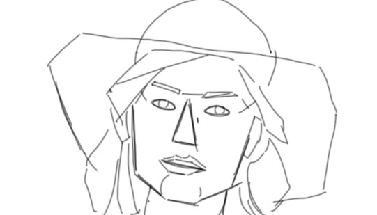

alt er bygget af former, som tilsammen er en forme også kaldet en siloæt. og det vi har tilbage er en meget svær, at forklar. vi har svært ved at tegne den rigtige siloæt fra starten Mange gør det som start til en tegne de får ofte et problem med at proportionerne er forkert Derfor bruger med simple former som mursten fil at bygge din tegne Lad os sige du har en skabelon Og skabelon skal fyldes ud med former Leg med forskellige former Når men har fyldt den ud er vi endt ud med en figurer Den passer nok ikke helt Vi har de store former nu har vi brug for de små former Det skulle fyld mere ud Du bør nu være klar til at lægge det sammen Viske de unødvendigt streger fra formering
